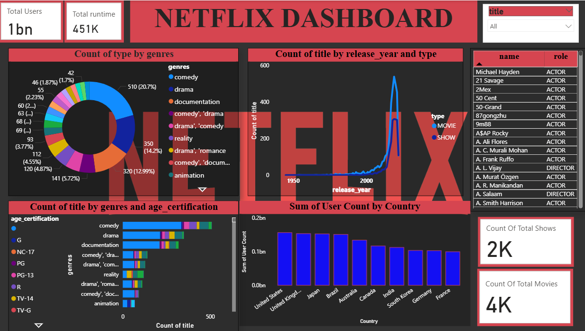
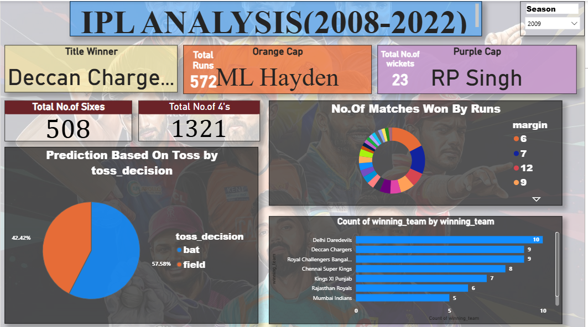
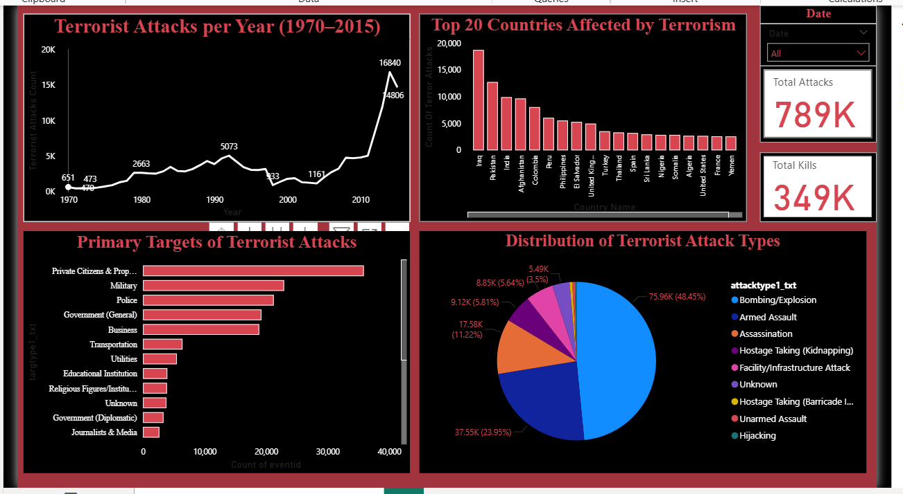

Data Analyst with ~2 years of experience in marketing, e-commerce, and KPI-driven analytics. Skilled in data cleaning, reporting, dashboarding, and delivering actionable insights.
Analyzed Netflix movies and TV shows to uncover content distribution, genre dominance, regional trends, and platform growth patterns.

Analyzed IPL match data to identify winning strategies and team trends.

Explored terrorism trends, high-risk regions, and attack methods.
